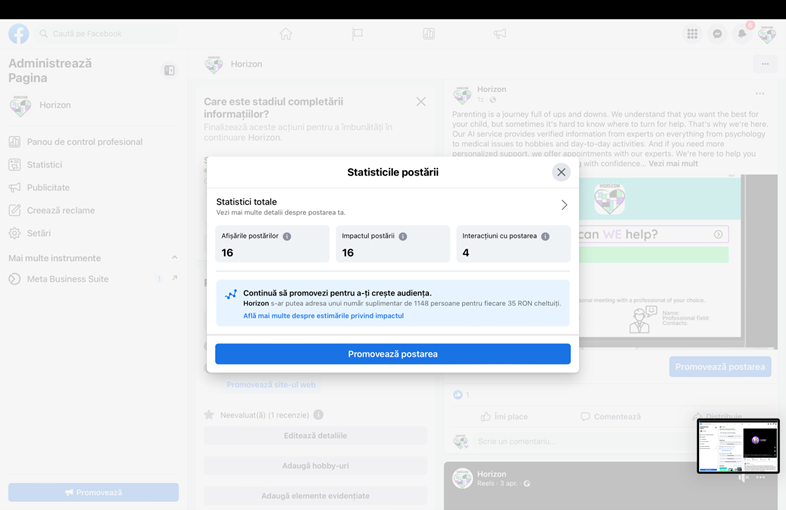

General Information
This branded website is publicly available at Horizon Github
This website was created by:
- Viktoriya Zhelyazkova (ID: 210581)
- Emily Djonkova (ID: 210243 )
- Ali Kafadar (ID: 210173)
- Luca Bostănescu (ID: 210400 )
Content
| Student names | Student ID | Value | Name and link of content |
|---|---|---|---|
| 1. Viktorya Zhelyazkova | 210581 | Round-the-clock support | About us |
| 2. Emily Djonkova | 210243 | Reliable sources of information | About us |
| 3. Ali Kafadar | 210173 | 21st century innovation, Mission, Vision | About us |
| 4. Luca Bostănescu | 210400 | Precise data | Abous us |
Production
Brand identity
Brand Name - Horizon
We chose Horizon as our Brand name. The reason why; it is a matching word for technology and innovation, catchy and memorable. Referring to the actual Horizon where the sun rises signifying a new day, it aligns with our brand mission and vision.
Brand Logo
For the logo we combined two main values of our brand - computer innovation and support. The heart symbolizes love, care, and support. However, we combined it with geometrical figures to represent the innovative and technological part of the brand.
Design Elements
Colors:#05F66D
Green often resembles personal growth. We used it to convey a sense of vitality and energy, which could be relevant for the parents that aim to support children's development and well-being, which is our vission as a brand.
#04D4D0
Blue is often associated with trust. Therefore, we used it to represent reliability, as our mission is to create reassurence in the parents and we want them to feel confident that the advice and recommendations provided by our brand are trustworthy and accurate.
#9219F5
This vibrant shade of purple adds up to the futuristic and modern look to our brand as innovation is one of the values of the brand.
Fonts:
Round pop: This font adds to the futuristic and innovatiove look which relates to our value - innovation.
Fira sans: This is a clear font. We used it to make our text easy and accessible to read.
UI elements
Navigation bar - we made the navigation bar a very contrast and bright color to make it distinguish with the other white background of the website. This makes it easy for the users to navigate. We also choose a clear and bolded font to make it easy for the user to navigate. We also used simple, short and easy to comprehend words and phrases like 'Home','Fund us' and 'About us' to make it easier for users to navigate and find what they are looking for.
Buttons - we used buttons with contrast to catch the attention of the users and to make them more likely to be clicked. Also, when the mouse is put on the button, it changes it's color, so it is more clear to the user which one of the buttons they are choosing. We also used them in the 'Landing page' to make it easier and more accessible for the users to go to the most important page of the website - the funding page or if they are not ready to fund us yet, to make them check the 'About us' page.
Carousel- we used the carousel not only to make the website more interactive and entertaining, but also to show less information on the page and not overload the users with text so they are more likely to read it.
Form - we used the form to make the funding possible, by letting the users provide the information required to make a successful bank transaction
Checkboxes - we put the checkboxes on the blue background to make them contrast with everything else on the page. We decided to use them to make the funding accessible, easy and clear, and to ensure that the user knows how much they are donating.
Pop up text - we put a pop up text after the user had put their details, to ensure them that they have done it correctly.
Collapse - we put collapse buttons to reduce the cognitive overload because when there is too much information on a page, users may feel overwhelmed and find it difficult to process.
Others
Video - we used a video in the 'Landing page' to catch the attention of the users and to give them short and clear information about what our brand and product is in order to make them intrigued and more likely to continue looking through the website and donate.
Icons - we used three icons in the 'About us' page to make the page more entertaining, but also to give insights about what the text next to them is about.
Navigation, pages and content
Landing page - On the 'Landing page' of our website we put a video to catch the attention of the users and to inform them briefly about our brand. Below the video, we put a question. By asking a question related to the button, we are giving the user a clear idea of what action they will take when they click on the button. This can help to reduce confusion and make it more likely that the user will click on the buttons. Additionally, asking a question can help us to personalize the user experience and make the user feel more connected to your website. The two buttons lead to the other two important pages of the website - the 'Fund us' page and 'About us'. We put a footer at the end to promote our Facebook page.
Fund us - We made the 'Fund us' page as easy to navigate as possible, because if it is complicated to comprihend the information on the page, the user might get confused and give up on funding. We put common fixed prices to make the funding as effortless as possible. Then, we put the form with the minimum needed information for making a bank transfer. Also, the user will get a pop up message saying 'Plese fill out this field', because if they miss to fill out one of the fields they wouldn't be able to make a successful payment. At the end, there is a contrasting button to catch the attention of the user and to make them finish the process. There is a pop up message to confirm the successful payment. At the end there is a footer again.
About us - The 'About us' page is to inform the users about the brand, the product and the team behind it. First, there are the mission and vission in a carrousel. Then the values are showing in collapses. We did that to reduce the cognitive overload because when there is too much information on a page, users may feel overwhelmed and find it difficult to process and understand. We put an explanation of the product and a picture related to that to make it easier to comprihend and understand. Then we put the Meet the team section, to make our brand more relatable and reliable. It can help customers connect with the company on a personal level. At the end there is a footer again.
Credits
HTML templatesCollapse
Pop up text
Images
Flaticon Icons (vission, mission, values)
UnspashPhotos in video in landing page
Pexel Photos of laptop
Testing Report
Testing goals- Our testing goal within the timeframe of testing was to examine whether our UI and UX elements were efficient performance and usability wise.
- Adapting and implementing new features with every occurring encounter within the process.
- Presenting our brand and getting feedback from the target group.
Testing methods
Participants - Our Participants were mostly aged between 30 to 40
Setting- On campus or online
In most of our solution interviews we had the chance to show our website our target group -the target audience being “parents with young children”
Via this method we showed the content of our website to our participants, this was convenient due to the fact that it was nicely tied to our user testing for our website it was the perfect opportunity.
The test’s protocol
The protocol at first was to do a basic walkthrough of the website, showing the features and the several pages like the landing page, funding, and the about us that were in the website, showing and presenting the values, the vision, and the mission of our brand. After that operation it was asked from the participant that they should try to donate 20 Euros in the aforementioned funding page. After that it was asked to find the facebook link that was embedded in the facebook icon that can be found on the bottom right section of the page. The whole process was recorded via teams.
The testing results
Positive and negative aspects of the UI/UX that have been identified, ranked by importance.
Five E’s
Effective: Did the users manage to complete the tasks? Users were successful with managing the given tasks, users easily navigated and saw the features offered in our website.
Efficient: Were the tasks accomplished in a short time? Could that be shorter? Tasks were easily understood, with the website being mainly introduction about the brand and crowdfunding the process of following instructions were completed in a really short timespan, given the fact that our target group is “parents in a certain age group that is not relatively good with technology” with that fact our users easily navigated within the website.
Easy to learn: Is it easy for users to remember the flow and learn the functions? Once our users get pushed into the process of reading, scrolling, and clicking they do remember and learn the functions. Error Tolerant:Can errors be easily fixed? Does the software help fix them? With the feedback given by our test users and noticed within the testing process, yes the errors can be fixed with the assistance of the software also detecting bugs.
Engaging: Was the interface engaging / attractive, or did it turn users away from the website? Due to the fact some users were only focused on finishing the given tasks, there was not much feedback on how the interface was, but seeing how they interact, scroll, and click within the process of testing it was engaging. Unfortunately some other aspects of the interface were either ignored or straight up missed. Improvements
The pictures of the collaborators were changed due to the requirement of a more professional look.
The text given in the about us section has been put in a collapse in order to reduce the cognitive overload because there was too much information on a page, users may feel overwhelmed and find it difficult to process.
Marketing
Context of campaign and promotional activities
As a solid Marketing & Communication plan starts, we, at Horizon defined our target audience very thoroughly. The people we targeted were parents, from the age of 35 to the age of 50, from Eastern Europe and Turkey, who have fairly stable lives and are part of the working class. Their lives revolve around their family. The target audience uses Facebook as their main social media platform preference, as a way of entertainment, gathering information, keep in touch with family and friends and joining communities with shared interests (Facebook groups).
The Second step we took was to build our persona, our ideal customer and user of our services. With all the above findings from our interviews and research, we created Alexandra: (see screenshot)
As we have found out that all the people from the target group which we interviewed were, in fact, using Facebook as their favourite and most used social media platform (backed with the findings from the research that Facebook is the most used social media platform in the entire world still) we decided to create a page for our brand which will promote in the end our brand’s vision, mission, core values and services which we provide. In addition to this, we had to settle realistic, achievable goals for our social media campaign. In the end we came up with the goals, the reach, affect and response we wish to get by the end of the project (screenshot bellow).
In the end, combining our marketing goal of achieving brand awareness, combined with the vision, mission, and core values our brand stands for, we have also put forward the message we want to convey and pass to our audience, through our Facebook campaign and posting process: Parents can rely and lean on us, we are with and for them within their journey as Horizon.
Our first post
We wished our first post to be an opening for our target audience, an occasion to let them know of our existence and meet us. In concordance with the rest of our brand, we used a very intimate and personal approach towards them, to get their attention and also gain their trust. We wrote an open letter towards them in which we capture our mission, who we are brand and what we value. That we understand and support them in every way and that they should consider us their partner in parenthood, rather than just a normal brand with a product. Moreover, in order to help us with the reach, we used the most popular hashtags which are correlated with parenthood and AI technology (screenshots and proof in the professionalism chapter).
Reach and conclusions for the first post can be found in “Conclusion and future improvements” chapter.
Our second post
For our second post, we wished to give the audience a good reason to check our website and relate to our vision, mission, and solutions. In order to achieve that we created a story. We kept the same unique, intimate and personal tone which by now became a prominent part of “Horizon” The choice of colours relates to our specific colour palette and the copy writing text which is part of the photo post, conjointly with the story in the description accentuate one of our very important values: clarity. The photo which is seen in the background of the photo, completes the plot of our story - a blurry image of a young girl dancing, in order to enhance our public not only by a matter of awareness, but also by an emotional point of view.
Effect, reach and conclusions about this post can be found in the “Conclusion and future improvements” chapter.
Our third post
Our third post, we realised our page and themes were very static, not engaging enough for our audience. We decided to use the “reel” function in order to attract more visibility throughout our social media platform. We have done a video which invites our public to join us and visit our website and learn more about our product as well, and try it out! We also used the most popular hashtags for a bigger reach. From interviews we hace also gathered information that our target audience is watching tie tot shorts or facebook reels for entertainment and informational purposes, so we used the function in combination with a nice tune in order to capture their attention.
Effect, reach and conclusions about this post can be found in the “Conclusion and future improvements” chapter
Our fourth post
Our fourth upcoming post sends our target audience back to our brand, we explain our fundraiser and for what we stand, we keep the intimate tone in order to create a personalised and relatable experience. We use the quote ““The best inheritance a parent can give his children is a few minutes of his time each day.” by O. A. Battista, which also enhances our relatability to them, inspiring trust and support. The image is of a happy family in the background and on top is our logo, referring to us, helping them in their quest to achieve the balance and peace in their day-to-day life. This post also sends the parents the “call for action” idea, as we present our fundraising options from the start.
Effect, reach and conclusions about this post can be found in the “Conclusion and future improvements” chapter
Our fifth post
Our fifth and last post before the marketing analysis, we have chosen to give more details to parents about our service and brand, what our product is capable of and what is our purpose for our brand, Horizon. We also give an insight on how the user interface and experience may look. As we use a screenshot with our prototype for the background. This not only gets the parents awareness, but it also makes our target audience understand how our vision, mission and values correlate with our services and our main goal: to help people with young kids overcome the obstacles in their lives. In the end, the post itself is an introduction for our brand’s future.
Effect, reach and conclusions about this post can be found in the “Conclusion and future improvements” chapter
Action button + website connection
In addition to posting, another way which we implemented in order to raise clicks on the website and achieve our main goal of the fundraiser. We have chosen to use the easiest way our clients could access our website: through an action button. This invites the individuals who are interested in our brand and our services, to learn more about us and even support our cause, on our crowdfunding website. The link to the website is also in the description of our page, for easy and quick access.
Learning points
A. What worked
When we first started the facebook page, our team rapidly shared and spread the name to their family members, groups of friends and colleagues, which helped us gain a relatively large community for the first weeks. When we introduced the page to the people we interviewed from our target audience (both for problems and solutions), we have also kindly asked them to distribute the links for our website and information about us. This helped us get nearly 50 followers from the beginning.
Moreover, the posts on the website which we thoroughly thought from the tone of voice, to the aesthetic and even the copy writing were a huge part in gathering around a public. By pushing our message through meanings such as intimacy, personalisation, trust and support, we not only reached people from outside of our circle, and who reacted to our platform in a positive manner.
Lastly, the use of parenthood stories which turned successful in combination with our edits had a great effect on our page. The “Facebook Reels” function also helped us get almost 300 views by the end of the week, with the help of the most popular hashtags which correlate with our brand’s target audience, vision, vision and values, because if the public looks at similar content, ours would appear as well.
B. What did not work
In the third week of the marketing department of our project, we have made a calendar for posting, personalised on the holidays, habits and lives of the Eastern European countries like Romania, Bulgaria and even Turkey. Because the holidays did not correlate with our project as much, we have not sticked to our marketing plan agenda very well. So, instead of posting on the local and national holidays in the countries we will be available, we posted important information and intimate messages for our target audience weekly.
Another point for which we could have persisted more is the posting itself. Weekly posts did help us with gaining a fair amount of followers in the public, we should have posted daily instead in order to increase our brand awareness earlier. This would have also helped us get closer to our reaction goal and reach goal.
Moreover, our team should have made use of the action button and the link to the website. We have only posted the crowdfunding website link in the description of the page. When we realised this, on our last post we have included a direct link on the website in the description, alongside a “call for action” description which gives our public a greater insight on our crowdfunding page.
Conclusions and future improvements
A. Conclusion
Our marketing and communication plan in the end was pretty successful for a start up company, without any marketing budget. We have posted constantly on Facebook, and kept our audience with holiday posting, dynamic reels and emotional quotes, which is how we were able to keep our target audience hooked and informed about our brand and our product. By the use of popular hashtags which are related to our area of activity and our industry we were also able to spread brand awareness to people who are interested in the same topics. Our Facebook reach and impact can be seen in the next Facebook statistic screenshoots from the first post, all the way to the last one:
Reach - 89, Impact - 68, Interactions - 62 (first post)
Reach - 67, Impact - 49, Interactions - 26 (second post)
Impact - 257 people, Average number of minutes watched - 0:02, Total number of minutes watched - 10:00, Views - 280 (3rd post)

Reach - 16, Impact - 16, Interactions - 4 (4th post)
Reach - 5, Impact - 4, Interactions - 6 (5th post)
Another factor which is worth analysing for marketing purposes is the Google Analytics code which we applied for our HTML website code. Based on our statistic, we have a continuous steady growth throughout our project, in a matter of clicks and reach to our website, as it can be seen in the screenshots from the professionalism chapter (as well as other analytics from Google Analytics)
Future Planning and improvements
We will continue posting regularly on our social media page, in order to not lose our followers and public. But in the future we will conduct a more in depth research to keep us up to date with our target audience’s interests and lifestyle.
One of our main future goals in terms of evolving as a brand is to start a community around it as well, a hub where all parents will share ideas, experiences, consult with experts in groups. We expect this to boost not only our social media marketing, as we would build a social media community, but also by other means such as word-of-mouth marketing, which is an easier way to gain the trust of the target audience.
We will increase our posting in “reel” format, as it has a higher reach on Facebook, as it can be seen from the reach difference in our posts.
We want to start collaborating with influencers in parenthood, in order to increase our awareness among the vast target audience.
For the future, we can expand our brand on other social media platforms as well, expand our content to a more audience-based such as: experience sharing, giveaways and even challenges.
Lastly, our team also has in plan to start posting Facebook “stories” formats, as they are shorter, easier to do and can be much more consistent throughout our social media campaign.
Professionalism
Imagines from our social media campaign and the impact it had on the website as well are attached
Management
All the detailed explanation of the canvases, alongside justifications, can be found in the Lean Canvases.
Lean Canvas
Problem
1. Parents don't easily accept external help when it comes to raising their children, but they do research for information constantly.Existing alternatives: Online forums, internet search, Facebook groups, (rarely) going to professionals
2. Due to constant change within our world parents are uncertain and worried about their child's future.
Existing alternatives: Parents try to talk with their children about certain topics but also most commonly they are trying to protect them by sugar coating statements and real life events.
3. They are trying to find other parents/communities with whom they can relate to.
Existing alternatives: Social media groups, outside (around playgrounds), kindergarten
Solution
By utilizing the technological advancement of artificial intelligence within the boundaries of the 21st century. Horizon offers its newest Product, PI (Parental intelligence) is an engine, specifically designed to help parents in need of any kind of help. Ask - consult - clarify, with the services offered in Horizon parents have the freedom to resolve the questions and problems they are facing in the comfort of their home with complete privacy. The information that is provided within Horizon is checked by experts that are ready to assist and guide.Customer segments
Target group:Parents with young children
Age: 35-50
From: Eastern European countries (Turkey, Bulgaria and Romania)
Couples
Different Occupations
Fairly Stable Life with an average income
Their children are at the age between 3-12 years old
Education: Kindergarten - Elementary & early middle school
Early adaptor (Persona)
Ideal customer:
Alexandra
37 years old
From Bucharest, Romania
Married for 9 years.
Has two kids, a 8 year old boy and a 3 year old girl.
Works remotely for the sales department of a corporation. Her job allows her to spend more time with her children since she works from home and when the kids are in kindergarten or school, she has time to fully concentrate on her tasks not only at work but also around the house.
Average income - working class.
The boy is overweight, and she seeks help for his mentality. She is worried that this can impact not only his confidence, but it can also have influence of his self-perception in the later stages in his life. Also, she still adapts working again since she just finished her motherly leave (which is two years) and sometimes finds it difficult to accustom to working life without being with her 3 year old child all the time. Due to that, she feel quite stressed and worried if her younger one is feeling okay being away from her (as she is in the kindergarten) and how she reacts to the new change. Alexandra as well seeks for advice and help online and try to find people who are relatable to her situation.
Alexandra likes to watch movies with her husband and kids at home and try new food.
In the weekend, she makes her plans according to children's needs, spending time with them doing different activities like going to the park, to the cinema, to the playground and overall – be with them whenever she can.
Unique value proposition
Our proprietary AI system is a game-changer, collecting and cross-referencing all relevant online information to give us a significant edge in the market. But our competitive advantage doesn't end there. Our personalized approach, in partnership with a team of experts, creates a special bond between our brand and our clients, ensuring they receive the best possible care and support. With a deep understanding of the external factors that affect our clients in Eastern countries, we're committed to providing exceptional service and personalized care. Choose us for high-quality solutions to your problems.Unfair advantage
Our team is bolstered by strong connections with established institutions and professionals. Thanks to that we have unique partnerships, which allow us great benefits.Channels
1. Search engine optimization (SEO), which makes sure the website is displayed first in search engine results for pertinent keywords.2. Social media advertising on platforms like Facebook, Twitter, and LinkedIn to reach potential customers.
3. Influencer marketing, which entails collaborating with subject-matter experts or opinion formers to market the website to their followers.
4. Email marketing campaigns to subscribers or interested parties.
5. Content marketing, creating blog posts or articles that provide value to potential customers and attract them to the website.
6. Referral marketing, incentivizing current customers to refer new customers to the website.
7. Partnering with complementary businesses or websites to cross-promote and expand the reach of the website.
8. Paid search advertising, such as Google AdWords, to target customers searching for relevant keywords.
9. Events and webinars, providing educational or informational content and promoting the website to attendees.
Key metrics
1. User Acquisition: This metric will help us understand how many new users are signing up for our service. This can be tracked by monitoring the number of new sign-ups in our website. When reached 300 sign-ups as a start and continue growing steadily with at least 20 new ones per week, it’s successful.2. User Retention: This metric will help us understand how many users are continuing to use our service after signing up. This can be tracked by monitoring the number of active users over a certain period. A ground base of at least 150 customers who are using the service daily means a positive outcome for Horizon.
3. Engagement: This metric will help us understand how much users are interacting with our service. This will be tracked by monitoring the likes and comments on your social media accounts and the number of generated clicks on our website and posts. As Facebook is our main social media, when reached 1000 likes and 800 followers on our page in the first two months of our service and have steady 150 likes on each post, we measure this as a successful engagement rate.
4. Revenue: This metric will help us understand how much revenue our service is generating. We will track revenue by monitoring the numbers of paying users, the number of sold subscriptions and overall deals and partnership that we have. The more revenue we generate, the better – this means that our customers are happy with our product and more are yet to come.
Revenue streams
1. Subscription Model: Offer a subscription-based service where parents can pay a monthly or annual fee to access the AI engine and expert advice. This would provide a consistent revenue stream and allow for predictable forecasting.2. Freemium Model: Offer a free version of the service with limited features, and charge a premium for additional features such as more frequent access to real-life experts or personalized recommendations for their children.
3. Affiliate Model: Partner with companies that offer products or services relevant to parenting and earn a commission on any purchases made by users referred by the AI engine.
Cost structure
1. Technological CostsFixed Costs: The price of creating the AI engine, buying hardware, and paying licenses for software.
Variable Costs: The price of hosting and scaling the platform, upgrading the AI engine, and buying new hardware as required.
2. Human Resource Costs
Fixed Costs: The salaries and benefits of full-time employees.
Variable Costs: The cost of hiring and compensating part-time or contract workers, as well as any bonuses or incentives.
3. Marketing and Customer Acquisition Costs
Fixed Costs: The price associated with designing and producing advertising campaigns, such as billboards, print advertisements, or TV commercials.
Variable costs: The cost of running online adverts, paying for search engine optimization (SEO), or hiring influencers for social media marketing.
4. Operations and Overhead Costs
Fixed Costs: The cost of rent, utilities, and office equipment, legal fees, and administrative charges. Variable Costs: The cost of supplies, as well as any repairs or maintenance on the office space or equipment.
5. Data Security and Privacy Costs
Fixed costs: The price of establishing security systems like firewalls or encryption.
Variable Costs: The price of updating security protocols to address emerging threats or weaknesses.
6. Licensing and Intellectual Property Costs
Fixed Costs: The price of licensing fees or buying intellectual property.
Variable Costs: The expense of getting new licenses, renewing existing ones, and any expenditures related to protecting intellectual property through legal proceedings.
Services/products
Our product is an engine, using artifcial intelligence and real experts to assist parents in need. The proprietary AI system is a game-changer, collecting and cross-referencing all relevant online information to give us a significant edge in the market. But our competitive advantage doesn't end there. Our personalized approach, in partnership with a team of experts, creates a special bond between our brand and our clients, ensuring they receive the best possible care and support. With a deep understanding of the external factors that affect our clients in Eastern countries, we're committed to providing exceptional service and personalized care.Our company has a distinct advantage over competitors, thanks to our proprietary AI system, which is specifically designed to collect and cross-reference all relevant online information. This one-of-a-kind program is difficult to replicate, giving us a significant edge in the market. However, our competitive advantage doesn't end there. We believe that building a strong relationship with our clients is essential for creating a trustworthy and relatable brand. That's why we have partnered with a team of experts who will provide a personalized approach to each client. This approach is essential in establishing a special bond between our brand and the community we want to create. It will also ensure that our clients receive the best possible care and support, as we strive to meet their unique needs. Furthermore, as our target audience is concentrated in Eastern countries, we have ensured that our team of professionals has a profound and in-depth understanding of the external factors that affect our clients' problems. This local knowledge ensures that our clients receive the best possible care and support, with a focus on addressing their specific needs and concerns. Ultimately, our commitment to providing exceptional service and personalized care sets us apart from our competitors and makes us the top choice for those seeking high-quality solutions to their problems.
Our brand's values are Knowledge, Support, Innovation and Clarity which are exactly the characteristics of the product and the idea behind it. The brand identity matches with the product as we choose colors, fonts and logo, who also represent those values.
Validation of Assumptions
Write a reflection on the choices made in creating choosing the trademark, including an analysis of the existing alternatives.